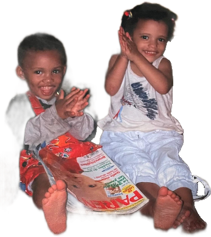
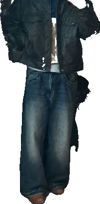
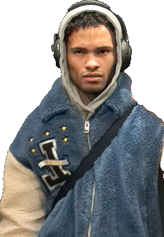

Hallo, mijn naam is Adrien Callewert, zoon van een Belgische vader en een Kameroense moeder. Samen met mijn tweelingzus ben ik opgegroeid tussen twee culturen, twee talen en twee verschillende visies op het leven. Ik spreek vier talen, waarvan drie vloeiend: Nederlands, Frans en Engels, en daarnaast ook wat Spaans. Hoewel mijn zus en ik op veel vlakken op elkaar lijken, verschillen we even sterk in andere aspecten van onze persoonlijkheid.
Ik ben iemand die constant droomt en verhalen bedenkt — een echte “professional daydreamer”. Terwijl het voor anderen soms lijkt alsof ik gewoon uit het raam staar, speelt er in mijn hoofd een volledige scène af: personages, emoties, dialogen, muziek en werelden. Tekenen werd voor mij daarom vanzelfsprekend meer dan een hobby. Het werd een manier om die innerlijke wereld zichtbaar te maken.
In een wereld die voortdurend beweegt en overspoeld wordt met informatie, geeft tekenen mij rust. Of het nu tijdens lessen is, in het park met een koptelefoon op, of alleen achter mijn bureau — tekenen haalt me even weg uit de realiteit. Het brengt me naar een andere wereld waar ik niet deel hoef uit te maken van alles rondom mij, maar gewoon mezelf kan zijn.


Voor mij staat tekenen centraal in alles wat ik graag doe, omdat het verbonden is met al mijn andere interesses. Mijn liefde voor animatie begon al op jonge leeftijd. Ik herinner me nog levendig hoe ik als kind samen met mijn grootmoeder naar Sneeuwwitje keek op een oude videoband bij mijn grootouders. Dat was de eerste keer dat ik voelde hoe kunst en film echte emoties konden oproepen. Sindsdien ben ik gefascineerd geraakt door animatie, van films tot anime zoals Dragon Ball Z.
Die fascinatie heeft mijn manier van tekenen sterk beïnvloed. Tekenen is voor mij niet enkel het namaken van wat ik zie, maar het creëren van sfeer, beweging en emotie — alsof ik mijn eigen scènes uit een animatiefilm maak. De afgelopen twee jaar heb ik mezelf sterk verbeterd, vooral op vlak van anatomie en karakterdesign, omdat ik mijn ideeën steeds nauwkeuriger wil kunnen vertalen naar beeld.
Ook muziek speelt daarin een belangrijke rol. Ik luister veel
naar R&B en klassieke muziek, en ik speel zelf piano. Muziek
beïnvloedt vaak de sfeer van wat ik teken: sommige schetsen
ontstaan vanuit een melodie, een ritme of een emotie die
muziek oproept. Daarnaast heb ik een grote interesse in
fashion en fashion design.
Mode is voor mij opnieuw een
andere vorm van visuele storytelling — een combinatie van
esthetiek, identiteit en creativiteit.
Ik geloof dat inspiratie overal te vinden is: in een gesprek met een vreemde, een wandeling door de stad, muziek in mijn koptelefoon, of zelfs een stille minuut achter mijn bureau. Alles wat ik ervaar, kan uiteindelijk terugkomen in mijn tekeningen.

Voor mij is tekenen creatie. Net zoals een schrijver een fictief verhaal schrijft en zo een volledige wereld tot leven brengt, probeer ik via tekenen iets zichtbaar te maken dat eerst alleen in mijn hoofd bestond. Door te tekenen kan ik gevoelens, gedachten en ideeën omzetten in iets tastbaar en deelbaar.Tekenen is één van de puurste manieren om jezelf uit te drukken. Het laat zien hoe jij de wereld ziet, wat je voelt en wat er in je hoofd leeft. Daarom geeft het ook zoveel voldoening: omdat je iets creëert dat volledig van jezelf komt. Alles waar ik van hou — animatie, muziek, fashion, storytelling — komt uiteindelijk samen in tekenen. Het is niet zomaar een hobby voor mij, maar de kern van hoe ik denk, droom en mezelf uitdruk.